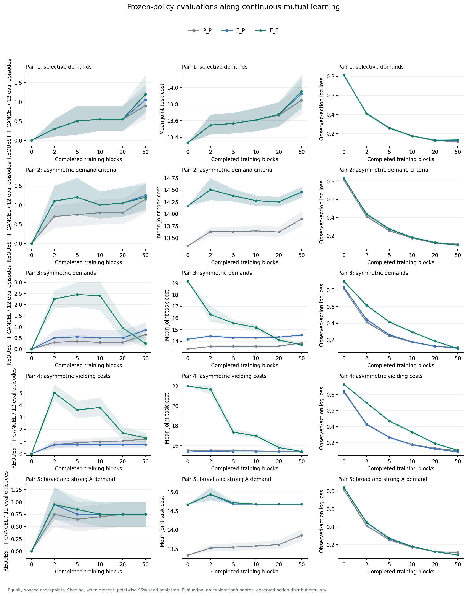

Reference results
Five agent pairs, three conditions and 20 seeds. Each run uses the same partner throughout training, with frozen evaluations at epochs 0, 2, 5, 10, 20 and 50.
Dataset
180,000 training episodes and 21,600 evaluation episodes. Both agents arrived in every evaluation episode.
These are archived results. They do not change the training state of the live experiment.
Communication with expectation enabled for both agents
Total REQUEST and CANCEL actions per 12 evaluation episodes, averaged over 20 seeds.
| Pair | Epoch 0 | Epoch 2 | Epoch 5 | Epoch 10 | Epoch 20 | Epoch 50 |
|---|---|---|---|---|---|---|
| 1 | 0.00 | 0.30 | 0.50 | 0.55 | 0.55 | 1.20 |
| 2 | 0.00 | 1.10 | 1.20 | 1.00 | 1.05 | 1.20 |
| 3 | 0.00 | 2.25 | 2.45 | 2.40 | 0.95 | 0.25 |
| 4 | 0.00 | 5.00 | 3.60 | 3.80 | 1.70 | 1.30 |
| 5 | 0.00 | 0.95 | 0.85 | 0.75 | 0.75 | 0.75 |
For pair 3, communication was present at an earlier checkpoint but absent at epoch 50 in 16 of 20 seeds. Pair 1 showed more communication later in training. Less communication alone does not establish improvement or overfitting.
Learning curves
Gray: prediction only. Blue: expectation for A only. Green: expectation for both. Shading shows pointwise 95% seed bootstrap intervals. Checkpoints are equally spaced on the horizontal axis.

Download data
- Evaluation summaries by pair, seed, condition and checkpoint
- Paired condition differences and 95% intervals
- Communication patterns across seeds
- Run counts and log verification
Intervals describe variation across simulation seeds, not a human population. They are pointwise intervals without multiple-comparison correction. The refactored Python implementation reproduced all 1,800 summary rows exactly.